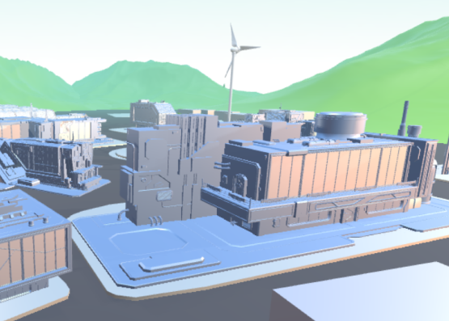

tube plant

 3D Version
3D Version
Ламинатные тубы по ощущениям чрезвычайно прочны и надежны, но при этом являются очень экономичным вариантом. Главное же их достоинство в оформлении упаковки. На тубах из других материалов печать происходит снаружи.
перейти
2D Version
Ламинатные тубы по ощущениям чрезвычайно прочны и надежны, но при этом являются очень экономичным вариантом. Главное же их достоинство в оформлении упаковки. На тубах из других материалов печать происходит снаружи.
перейти
Designed by soloviov